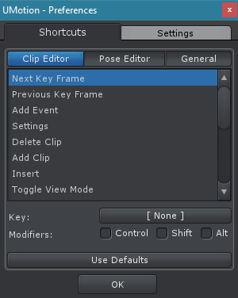
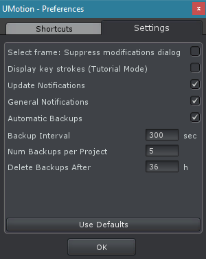

Preferences
The preferences are stored globally and affect all UMotion projects.
Shortcuts
The shortcuts for every action that can be performed in UMotion can be set in this tab.
Preferences Window - Shortcuts
There are three shortcut categories:
- Clip Editor
- Pose Editor
- General
Every shortcut is triggered when the Clip Editor, Pose Editor or Scene View is selected and the appropriate shortcut is pressed. When a UI element has a shortcut applied, it is displayed in its tooltip. To modify a shortcut, select the appropriate shortcut in the list and change its key combination by using the following UI components:
| UI Element | Description |
|---|---|
| Key | By pressing this button, a dialog window pops up that listens to any key press event. The pressed key is then applied to the current selected shortcut.

Bind Shortcut Key Dialog The Abort button closes the dialog without changing the binded key. The None button removes a binded key. |
| Modifiers | The modifiers are additional buttons like Control, Shift and Alt that have to be pressed to trigger the shortcut. |
| Use Defaults | Resets all shortcuts to their default binding. |
| OK | Closes this window. |
Settings
All global UMotion settings can be changed in this tab.
Preferences Window - Settings
| UI Element | Description |
|---|---|
| Select frame: Suppress modifications dialog | When this setting is enabled the Unapplied Modifications dialog will not be shown when the selected frame is changed in the Clip Editor. All unapplied modifications will be automatically discarded. |
| Display key strokes (Tutorial Mode) | When this setting is enabled key strokes are visualized in the lower center of the Clip Editor. This is useful when recording video tutorials. |
| Update Notifications | Enables/disables notifications about new UMotion versions. |
| General Notifications | Enables/disables general notifications about UMotion. |
| Automatic Backups | Enables/disables automatic backup creation of UMotion projects. |
| Backup Interval | Interval defined in seconds in which backups are automatically created (if the project was modified). |
| Num Backups per Project | The max. number of backups to be stored per project. |
| Delete Backups After | Backups older than the defined number of hours are automatically deleted. |